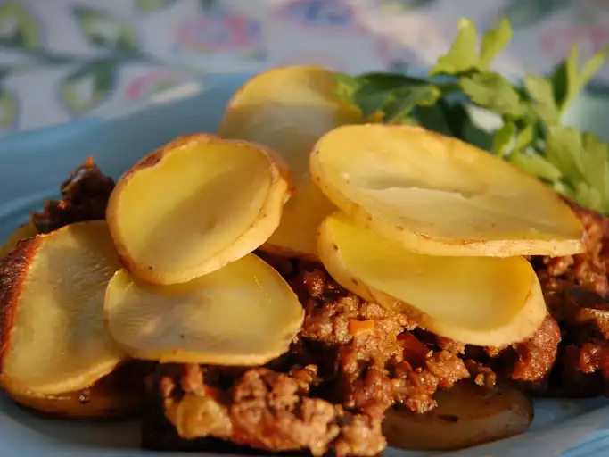

Serbian Ground Beef, Veggie, and Potato Bake

Description
Amazing Serbian dish with hamburger meat, paprika and vegetables. Great with a glass of red wine!
Ingredients
- 1 pound ground beef
- 1 tablespoon olive oil
- 1 medium onion, chopped
- 1 medium green bell pepper, chopped
- 2 medium celery stalks, chopped
- 1 medium carrot, shredded
- ½ tablespoon paprika
- ¾ teaspoon black pepper
- ½ teaspoon salt
- ¼ teaspoon crushed red pepper flakes
- 1 pinch ground cinnamon
- 1 pinch ground cloves
- ¼ cup water
- 2 tablespoons red wine
- 1 cube beef bouillon
- 2 tablespoons half-and-half
- 2 medium potatoes, peeled and sliced
Steps
- Preheat the oven to 400 degrees F (200 degrees C). Lightly grease a casserole dish.
- Cook and stir ground beef in a skillet over medium heat until browned and crumbly, 5 to 7 minutes. Transfer beef and juices to a bowl.
- Heat oil in the same skillet. Add onion, bell pepper, celery, and carrot; sauté until vegetables are tender, 5 to 7 minutes. Return beef to the skillet and season with paprika, black pepper, salt, red pepper flakes, cinnamon, and cloves. Stir in water and wine and cook until heated through, about 5 minutes. Add bouillon and stir until dissolved, 1 to 2 minutes. Remove from the heat and stir in half-and-half.
- Layer 1/2 of the potatoes over the bottom of the prepared casserole dish. Pour beef and vegetable mixture over potatoes, then layer remaining potatoes over top.
- Cover the dish and cook in the preheated oven until potatoes are tender, about 45 minutes.